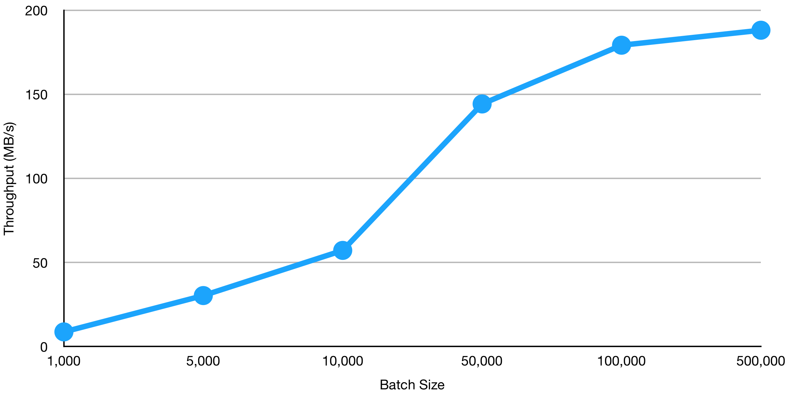
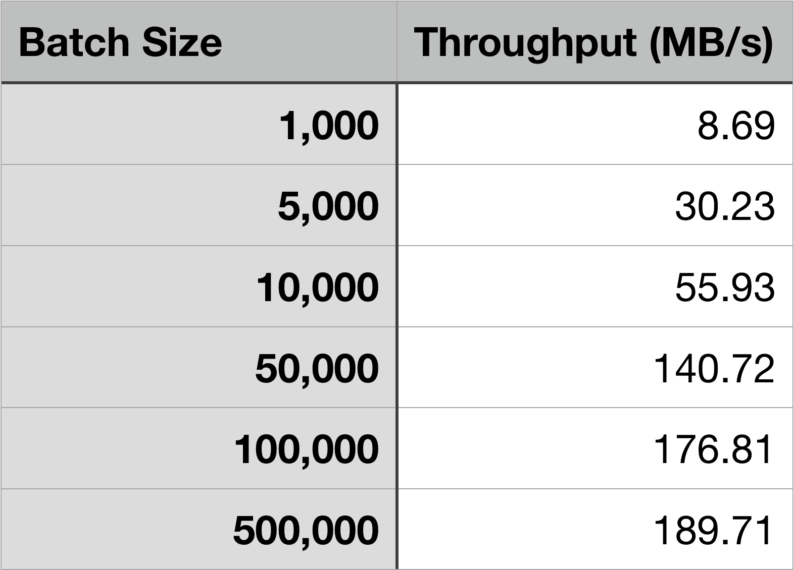
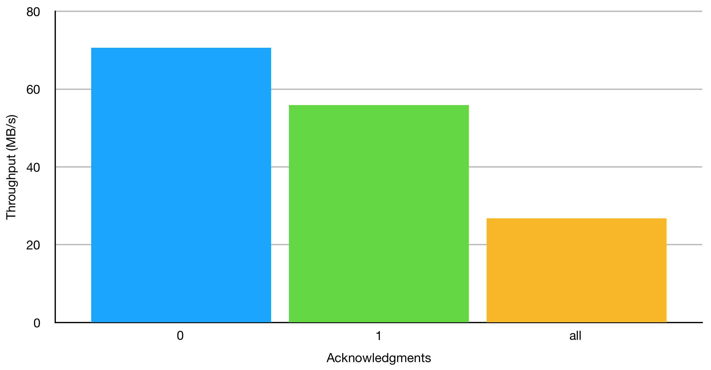
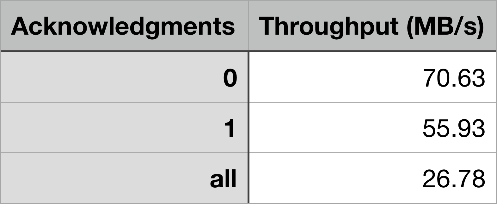
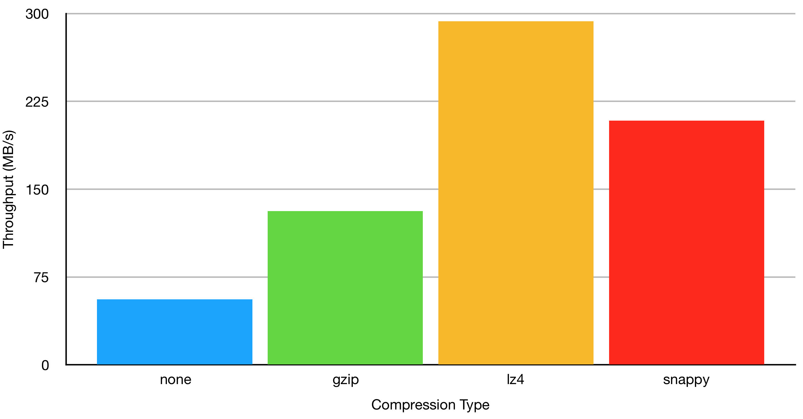
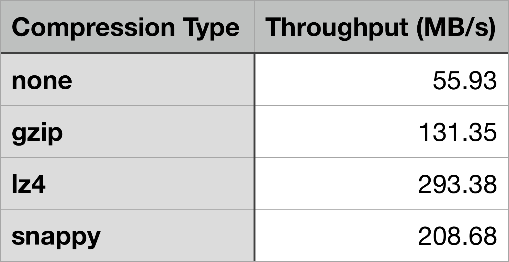

Effects of Batch Size, Acknowledgments, and Compression on Kafka Throughput
Author: Stuart Eudaly
Date: December 20th, 2018
In this blog article, we aim to give the reader a sense of how batch size, acknowledgments, and compression affect the throughput of a Kafka cluster. Specifically, we will be looking at how these settings have an impact on producer-to-broker throughput.
 While certainly not the only metric to be concerned about, maximizing throughput is often a main concern when tuning a system. Depending on your specific use case, throughput may even be the most valuable goal to strive for (as opposed to latency, availability, durability, etc.). Even on modest hardware, Kafka allows for some incredible throughput if set up correctly. LinkedIn (where Kafka originated) has a Kafka deployment that handles over 2 trillion messages per day!
While certainly not the only metric to be concerned about, maximizing throughput is often a main concern when tuning a system. Depending on your specific use case, throughput may even be the most valuable goal to strive for (as opposed to latency, availability, durability, etc.). Even on modest hardware, Kafka allows for some incredible throughput if set up correctly. LinkedIn (where Kafka originated) has a Kafka deployment that handles over 2 trillion messages per day!
When it comes to a Kafka setup, throughput from producers to brokers is determined by multiple factors. We are going to look at three of those factors in this post: batch size, acknowledgments, and compression. If you’d like more information, a good resource for learning about the basics of Kafka optimization can be found in this white paper on Confluent's web site.
The goal here is not to say “this is the only right way to configure your Kafka setup,” but rather to give a general awareness of how making changes in these areas can affect the overall throughput of the system. It should also be noted that every system is different and results will not be exactly the same as what you see here. However, the trends seen here should apply in most (if not all) scenarios.
Setting Things Up
For this post, I have set up Kafka using a Confluent distribution. For instructions on how to get started with Confluent’s distribution of Kafka, I recommend starting with this Confluent quick start article. In order to test producer throughput, we will be using the kafka-producer-perf-test found in [confluent directory]/bin/kafka-producer-perf-test. For help with the usage of the test, run: ./kafka-producer-perf-test -h.
I set up this Kafka cluster using AWS. In order to ensure that I had sufficient hardware for Kafka to run efficiently, I followed the recommendations found in this white paper by Confluent about reference architecture. For these tests, Kafka was set up on three “r5.xlarge” instances. These instances each feature 4 vCPUs, 32GiB of RAM, and 10Gbps networking. To see the full specs, take a look at the AWS reference article on instance types. The producer for this test was an “r5.large” instance, which is similar to the xlarge instances, but has 2 vCPUs and 16GiB of RAM. For more information on setting up Kafka on AWS, check out this blog post.
Batch Size
When a producer wants to send a message to a partition on a broker, that message can be sent immediately or can be batched and sent together with other messages. Because of the network and CPU overhead involved with sending messages between producers and brokers, throughput can be increased by sending messages together. As is probably obvious, this batching of messages to increase throughput is done at the expense of latency. If a message is produced at the beginning of a batch, it has to wait to be sent until the batch fills up (or a specified amount of time has passed), meaning it arrives at the broker later than it could have if sent immediately.
All properties for producers can be found and changed in their respective producer.properties files. (For an in-depth look at all of the producer configuration settings, take a look at Kafka’s documentation.) This file can be found in [confluent directory]/etc/kafka/ and contains the batch.size parameter, which is measured in bytes:
# the default batch size in bytes when batching multiple records sent to a partition
#batch.size=
The batch size should be set in the producer.properties file once a value has been determined. However, when running the perf test, --producer-props overrides the properties file. So, for our tests, we’ll be using the command-line argument instead. Another factor here is the buffer size. The buffer.memory is the amount of memory in bytes that the producer is allowed to utilize to store a batch before sending. This means that the buffer needs to be AT LEAST as big as the batch size. The default value for buffer.memory is over 30MB at 33,554,432 bytes. In these tests, I was not going to send a batch larger than about 500MB, so I set the buffer to roughly 4GB. Here is what the Apache’s documentation linked earlier has to say about buffer.memory:
“This setting should correspond roughly to the total memory the producer will use, but is not a hard bound since not all memory the producer uses is used for buffering. Some additional memory will be used for compression (if compression is enabled) as well as for maintaining in-flight requests.”
I also discovered that increasing the buffer size DOES NOT increase the Java heap size for Kafka. In order to do this, you can set the environment variable in a terminal before starting Kafka with:
Now, enough about setup. Let’s take a look at some results!
Results for Batch Size Tests
Each test for an individual batch size was done three times then averaged. The actual command given was as follows (using 1,000 batch size as an example):
Here’s what each of those arguments mean:
--topic testTopic The topic the perf test will write to --num-records 1000000 The total number of records to send for the test --throughput -1 The maximum throughput for the test --producer-props The producer properties bootstrap.servers The location of one of the Kafka brokers batch.size The batch size in bytes linger.ms The amount of time the producer will wait if a batch does not fill buffer.memory The amount of RAM allocated for the producer to store batches request.timeout.ms The amount of time before a timeout from a request occurs --record-size The size of each record in bytes
A few notes:
- I chose to send 1,000,000 records to allow for a good throughput measurement.
- Setting throughput to “-1” means there is no maximum throughput.
- Everything following
--producer-propsoverrides what is in the producer.properties file. - For my testing, I needed to increase the
request.timeout.msvalue for some of the smaller batch sizes, as messages were being produced much faster than they were able to be received by the brokers.
 
As can be seen above, the larger the batch size, the higher the throughput. It should also be noted that message size plays into throughput. However, message sizes can vary between producers and batch size can be considered rather than message size. In other words, as long as the message size is less than or equal to the batch size, setting an appropriate batch size will determine how many bytes are sent per request between producers and brokers.
Results for Acknowledgments Tests
When a producer sends a request to the brokers, an acknowledgment is sent back to the producer to confirm receipt of the request. Kafka producers have three settings for acknowledgments:
- A setting of “1” (the default) which means that producers only require one acknowledgment from the broker leader. If the leader fails immediately after receiving a record from the producer, but before the followers can copy it, that record will be lost.
- A setting of “all” or “-1” which means that producers require acknowledgments from every broker that contains the topic. This ensures durability of the record as long as at least one in sync replica remains online.
- A setting of “0” which means that producers do not require any acknowledgments from brokers. This setting does not guarantee durability of records.
 
As might already be obvious, requiring more acknowledgments means the producer has to wait before sending more records. As can be seen in the results below, the less acknowledgments required by the producer, the higher the throughput. This comes, however, at the expense of durability. The only change in the terminal command is to add acks=0 or acks=-1 to the --producer-props argument. For these tests, I chose a set batch size (10,000 bytes) and simply changed the “acks” property. Because the default is “1,” I used the original results for a batch of 10,000 bytes that was tested earlier.
Results for Compression Tests
Compressing messages in Kafka works on entire batches. According to Kafka’s documentation on producer configurations:“Compression is of full batches of data, so the efficacy of batching will also impact the compression ratio (more batching means better compression).”
In order to show the differences in throughput of the different compression methods, I have chosen a single batch size of 10,000 bytes.Kafka supports three types of compression:
- gzip
- snappy
- lz4
--producer-props argument compression.type. Again, the original results for 10,000 bytes found in the batch testing earlier was used for the “no compression” test.
 
Note that compression does introduce CPU overhead. As stated in the documentation on compression:
“Kafka supports this with an efficient batching format. A batch of messages can be clumped together compressed and sent to the server in this form. This batch of messages will be written in compressed form and will remain compressed in the log and will only be decompressed by the consumer.”
This means that the producer and consumer (though not the broker!) have to compress/decompress messages in addition to any work involved in simply producing/consuming them. However, in your specific scenario, CPU may not be the bottleneck. If that is the case, compressing messages can greatly increase throughput. Similar to “acks” above, the only change in the terminal command is to addcompression.type=gzip (or any of the other types) to the --producer-props argument.
The results show that any compression increases throughput. For this particular set of tests, throughput is increased by more than double for all three compression types with the “lz4” having the highest increase in throughput with over five times that of no compression.